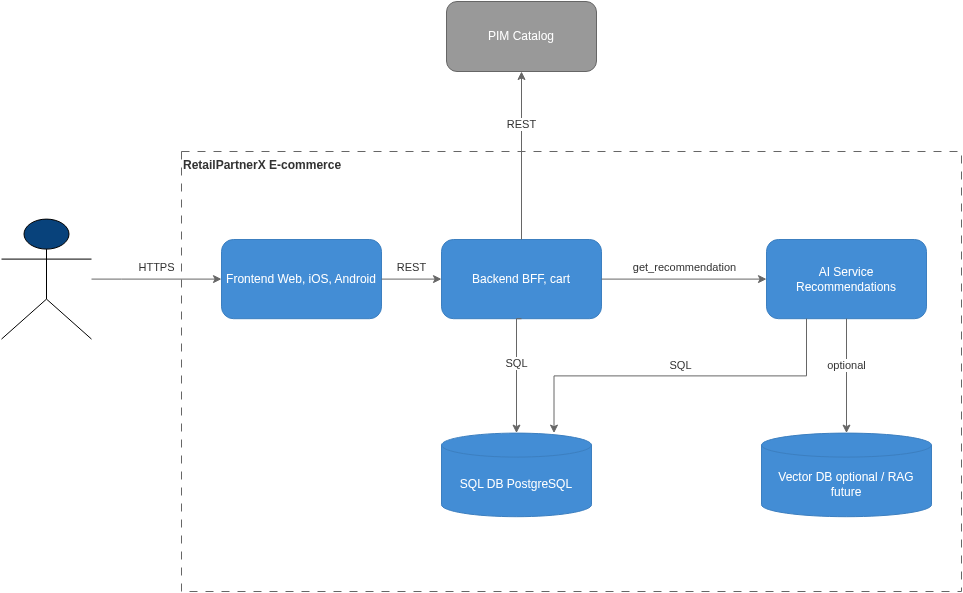
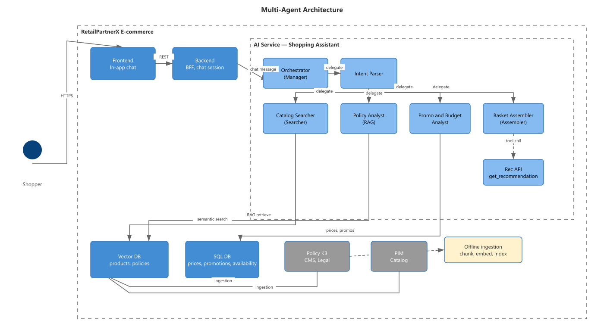
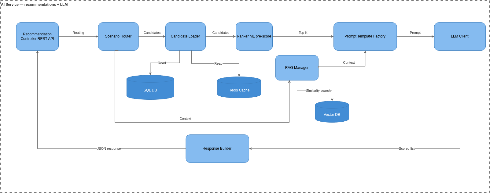
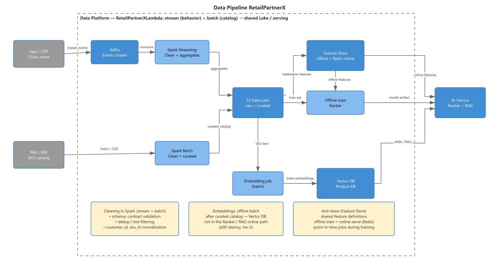
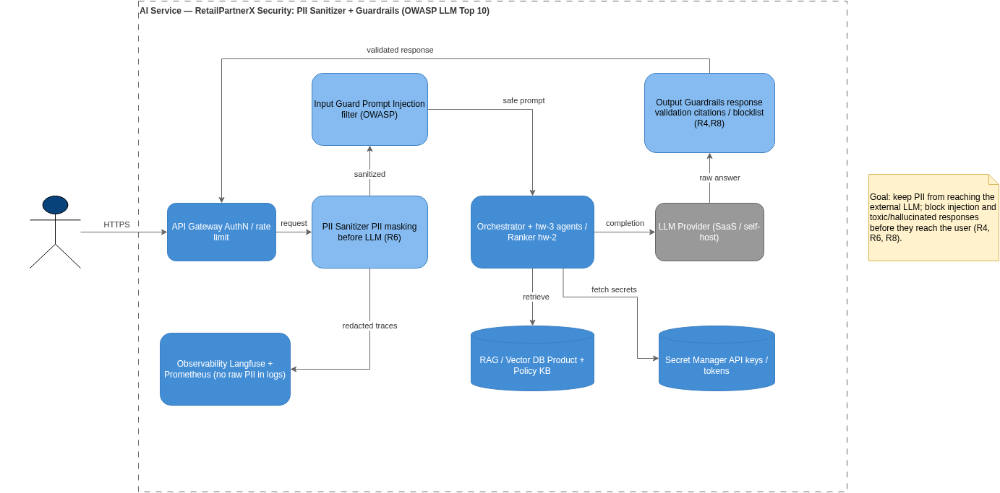
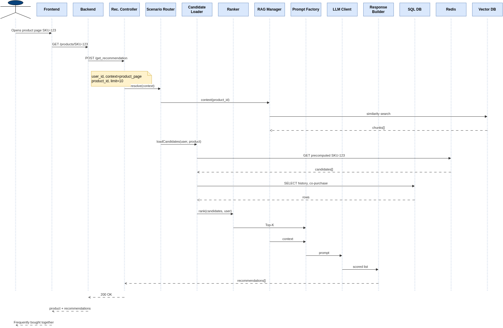
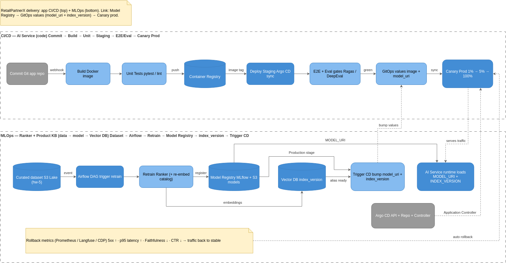
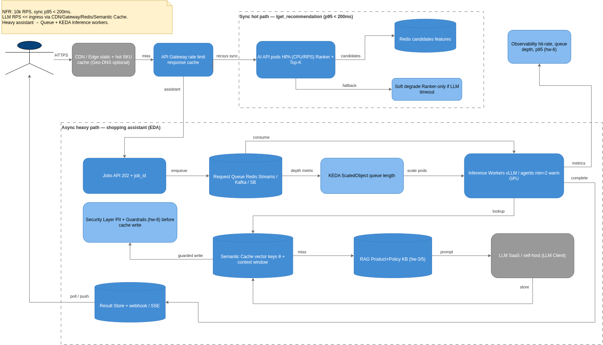

What this portfolio demonstrates
AI systems treated as distributed software systems: boundaries, data flows, integrations, trust boundaries, failure modes, evaluation and trade-offs, not just a list of technologies.
Architecture of an AI-native system for FMCG retail: personalized recommendations and a shopping assistant in a mobile app
Executive Summary
RetailPartnerX, an FMCG retailer, wants personalized recommendations and conversational commerce, but the requirements are vague: no KPIs, data boundaries or channels. The case works through the full architecture lifecycle, from discovery and the contract model to C4, agentic RAG, the data pipeline, production readiness, inference sizing, delivery automation, high-load design and FinOps governance.
AI systems treated as distributed software systems: boundaries, data flows, integrations, trust boundaries, failure modes, evaluation and trade-offs, not just a list of technologies.
C4 (C1–C3), Sequence, OpenAPI, multi-agent RAG, ADR LLM hosting, data pipeline, security/eval/observability, inference sizing, CI/CD and MLOps, high-load design, Model Card and FinOps: most of the artifacts.
LangGraph stub: 6-agent flow, keyword RAG, policy deny, 7 pytest. No API keys, no real LLM or Vector DB.
A production deployment. There is no running Kafka, Spark, Pinecone, Prometheus, Ragas CI, Terraform, Argo CD or KEDA. hw-2 sets no numeric latency SLO until MVP measurements exist; the 10k RPS and p95 < 200 ms figures in hw-9 are design targets, not measurements.
Architecture Journey
A single case study developed step by step across the course modules. The physical hw-* directory names are kept for course submission.
C4, Sequence, OpenAPI: boundaries and the Backend ↔ AI Service contract
VRAM and GPU sizing for Llama-3-70B @ 1000 RPM across 4 clouds; INT4 + vLLM
Model Card, bias and fairness, AI decision audit, cost optimization plan
Architecture at a Glance
Two key views: the recsys container architecture (hw-2) and the shopping assistant agentic layer (hw-3).


POST /get_recommendation — Basket Assembler calls the recsys API from hw-2Key Architecture Decisions
AI Architecture Capabilities
Statuses are based on repository evidence. Not all capabilities are implemented; this is an honest maturity map.
Production Readiness
AI architecture is more than an LLM API. Below is what the design covers and the status of each area.
| Area | Status | What is covered | Evidence |
|---|---|---|---|
| Security | Architecture Design | PII Sanitizer, Input/Output Guardrails, Secret Manager, OWASP LLM mapping | QA §1 |
| Reliability | Studied + Design | OpenAPI 503, graceful degradation, cold start fallback in the strategy | OpenAPI, hw-1 |
| Evaluation | Planned | Faithfulness, Answer Relevancy; Ragas / DeepEval CI gates | QA §2 |
| Observability | Planned | Golden Signals + AI cost widgets; Prometheus, Tempo, Langfuse | QA §3 |
| Data | Architecture Design | Ingestion, Feature Store, anti-skew, index versioning, drift monitoring | data-pipeline.md |
| Capacity / Cost | Architecture Design | VRAM + KV Cache sizing, GPU fit, 4-cloud comparison, INT4 + vLLM | inference-sizing.md |
| Delivery | Architecture Design | Terraform sketch, GitOps, MLOps retrain loop, Canary with rollback metrics | delivery-pipeline.md |
| Scalability | Architecture Design | Multi-tier and Semantic Cache, HPA + KEDA, queue-based async, backpressure | high-load-architecture.md |
| Governance | Architecture Design | Model Card, bias and fairness metrics, decision audit log, FinOps plan | model-card-and-finops.md |
| Platform | Not evidenced | A running deployment: out of scope for this repository; delivery is designed in hw-8 | — |
Enterprise / Retail Context
The architecture patterns in this case can be applied to typical FMCG / grocery retail problems, without being tied to any specific production system.
A “Frequently bought together” block on the SKU page, with Ranker → Top-K → LLM re-rank and latency budget control.
Conversational commerce: constraint parsing (allergens, budget, promotions) and basket assembly through the recsys API.
RAG over internal policies (GDPR, 18+, allergens) as a semantic guard, with Policy Analyst isolated for audit.
Data pipeline that keeps the Product KB, embeddings and online features current, linking Faithfulness to hw-5 freshness.
The Supervisor multi-agent pattern applies to internal knowledge workflows with explicit guardrails and evaluation.
Dual KB architecture (operational data + policy docs): a pattern for separating retrieval strategies.
Evidence Map
| Module | Architecture focus | Key artifact | Link |
|---|---|---|---|
| hw-1 | Program, risks, roadmap | RetailPartnerX AI Strategy | Strategy |
| hw-2 | C4, Sequence, OpenAPI | C2/C3 diagrams + recommendation-api.yaml | Architecture README |
| hw-3 | Agentic RAG, prototype | agents.md, rag-pipeline.md, LangGraph code | graph.py |
| hw-4 | ADR LLM hosting | ADR-001 Accepted | ADR-001 |
| hw-5 | Data pipeline, Feature Store | data-pipeline diagram + doc | data-pipeline.md |
| hw-6 | Security, eval, observability | quality-assurance.md, security-layer | QA doc |
| hw-7 | Inference sizing, cloud cost | inference-sizing.md, recommendation.md | inference-sizing.md |
| hw-8 | IaC, CI/CD, MLOps, Canary | delivery-pipeline.md, terraform-sketch.tf, CI/CD diagram | delivery-pipeline.md |
| hw-9 | High load, caching, async | high-load-architecture.md, high-load diagram | high-load-architecture.md |
| hw-10 | Model Card, FinOps | model-card-and-finops.md | model-card-and-finops.md |






Author
Project Status
RetailPartnerX — an educational architecture case study developed as part of the AI Architect program.
The repository contains the architecture design, a LangGraph prototype (stub), experiments and coursework artifacts in hw-*.
The goal of the project is hands-on work on the architecture of AI-native systems and production-oriented trade-offs.
This project is not a production deployment.